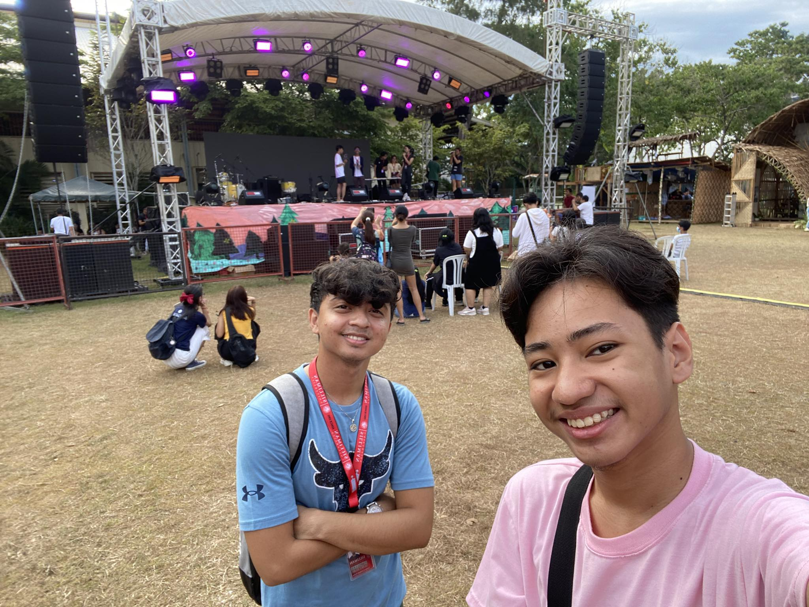
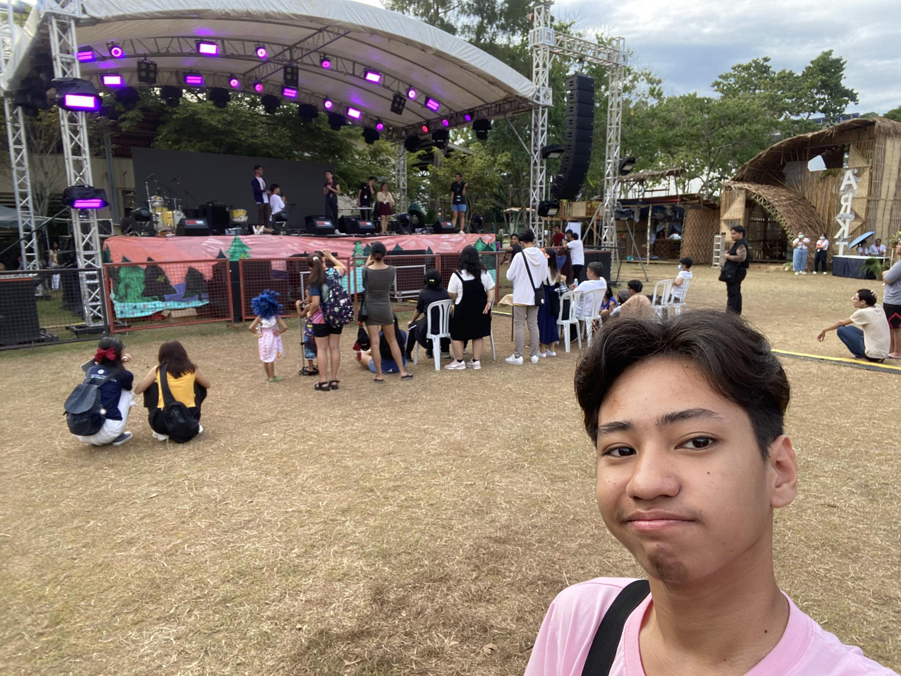

local_floristIMPROV QUEST
groups SILLIMAN GEEK CULTURE SOCIETY

The SU Experience of Ernest Rojo
"Impov Quest," operated by the "Silliman Geek Culture Society," emerged as an engaging event where students took the stage to enact scenarios provided by the hosts. This improvisational exercise challenged participants to think on their feet, unleash creativity, and inject humor into spontaneous performances. The simplicity of the event contributed to its appeal, providing a platform for students to showcase their quick thinking and comedic talents. While I observed the event, the entertaining performances ignited a desire to participate in the future. Notably, fellow CCS students, Carlos Macalolot and Renzel Alferez, caught my attention with their hilarious portrayal of characters in a haunted mansion scenario.
"Impov Quest" proved to be an entertaining and enriching experience, showcasing the simplicity of the format while challenging participants to think creatively and humorously. The event exceeded expectations, sparking an interest in future participation. Witnessing the performances, especially those of CCS students Carlos Macalolot and Renzel Alferez, added an element of relatability and humor. Their portrayal of characters in a haunted mansion scenario, with Alferez as an average bratty white woman and Macalolot as a talking dog, left a lasting impression and exemplified the light-hearted and enjoyable nature of the event.
The experience at "Impov Quest" has fueled a desire to actively engage in similar future events, embracing the opportunity to unleash creativity and humor on stage. Inspired by the performances, particularly those of fellow CCS students, I see the potential for personal growth and entertainment in participating in such events. Moving forward, I aim to overcome any reservations and embrace the spontaneity and joy that "Impov Quest" and similar activities offer.
Because of this event, I am motivated to step out of my comfort zone and participate in future improvisational activities, like "Impov Quest," to explore and develop my creative and humorous side. Witnessing the performances, especially those by Carlos Macalolot and Renzel Alferez, has inspired me to embrace the spontaneity and joy that comes with engaging in such entertaining and enriching events.

